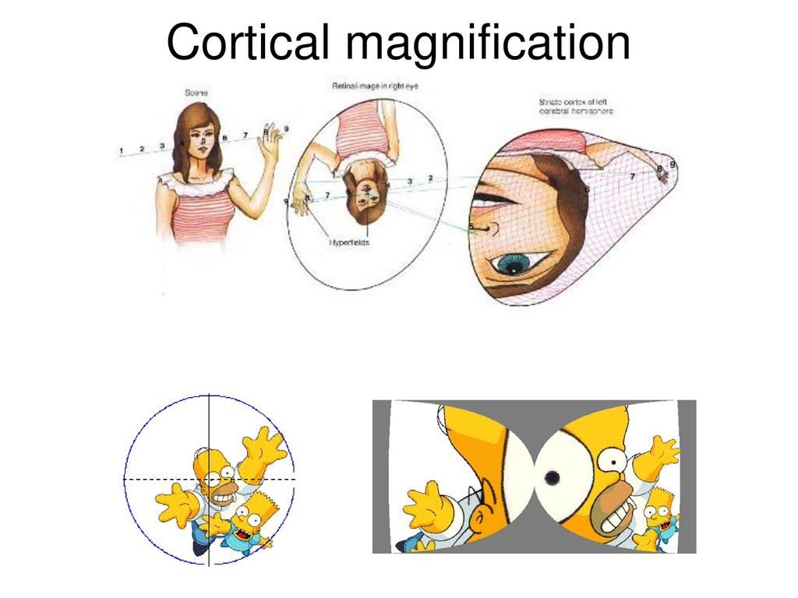
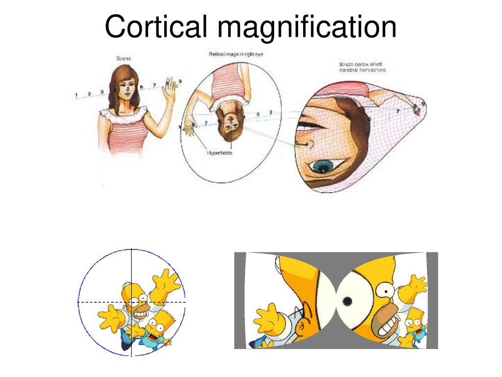
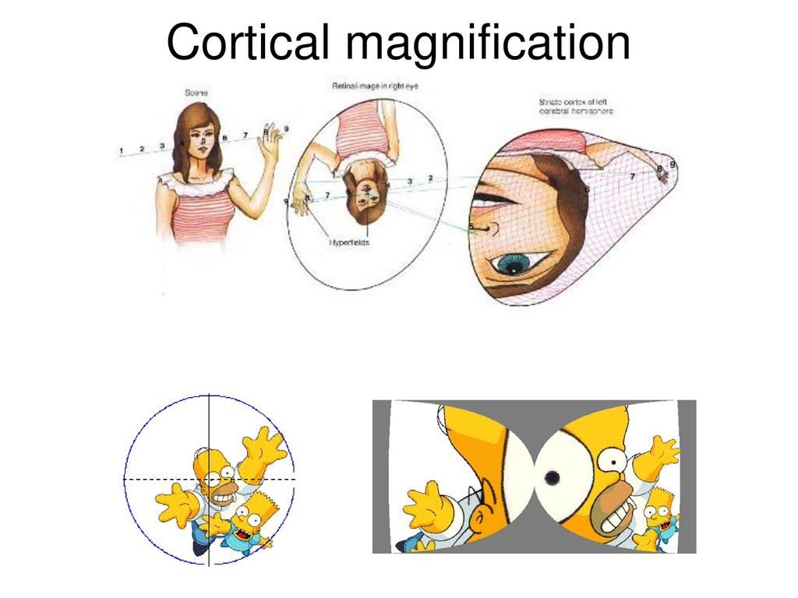

Central Visual Processing
Ganglion cells:
• Ganglion cells are the first neurons in the retina that respond with action potentials.
• Most ganglion cells have a 'center-surround' organization.
Surround size
Surround Strength:weak strong
Orientation selective cells (Cortex): Many V1 neurons are orientation selective meaning that they respond strongly to lines, bars, or edges of a particular orientation.
Surround size
Surround Strength:weak strong
Orientation Angle:-9090
Receptive field
The receptive field is a portion of sensory space that can elicit neuronal responses when stimulated. In a previous tutorial we saw how horizontal cells shape photoreceptors' responses and help to create a center-surround antagonism. Bipolar cells in the retina inherit the center-surround organization and split the visual signal to center-'on' and center-'off' information channels. Ganglion cells have a similar center-surround and 'on' / 'off' receptive field properties.
Why is the center-surround antagonism important? You can flip the surround receptive field to resemble the center response by clicking on 'Same polarity surround'. Answer: They emphasize edges.
Cortical architecture
Cortical cells exhibit diverse response properties. Some are orientation selective, others are directionally selective - reesponding only to motion in a particular direction. Other cells respond to colors, complex geometrical shapes etc. These cells can be minocular or binocular (recal the ocular dominance columns).
•Retinotopic Mapping: Neighboring cortical cells typically respond to similar retinal locations. The foveal region is represented on the posterior tip of the occipital lobe, and is greatly overrepresented (half of the cortex is dedicated to processing foveal information).

•Ocular dominance columns: See previous tutorial.
•Orientation columns: As one moves the tangentially in the orthogonal direction, one first find cells selective for vertical, then diagonal, then horizontal, etc. Cells' orientation preferences are locally continuous, but sudden shifts in preferred orientation also occur. When viewed from above, orientation dominance resembles a colored pinwheel. AT the center of the pinwheel, where a single set of all the orientations meets, neighboring cells can respond to very different orientations.

•A hypercolumn is a chunk of cortex about 1 mm square by 3 mm thick twith same receptive field location, but different orientation & direction selectivities and eye dominances.
http://www.scholarpedia.org/article/Visual_map https://en.wikipedia.org/wiki/Receptive_field Composed by Alon Poleg-Polsky, 2019alon.poleg-polsky@ucdenver.edu